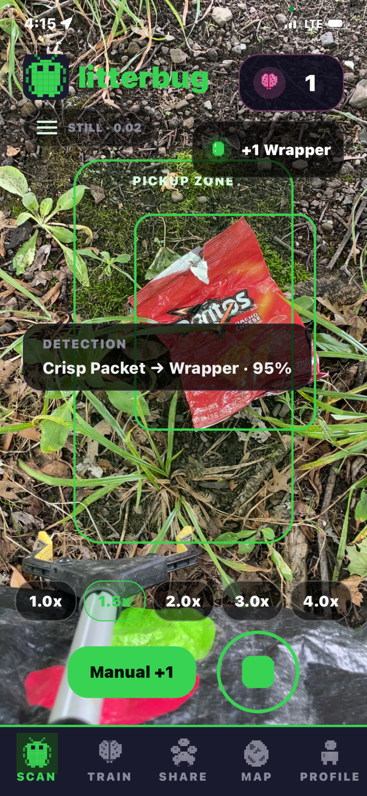
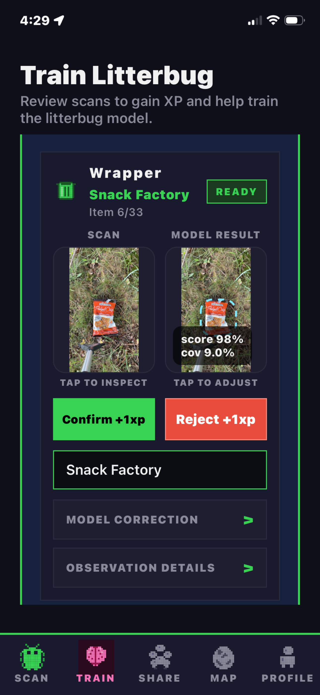
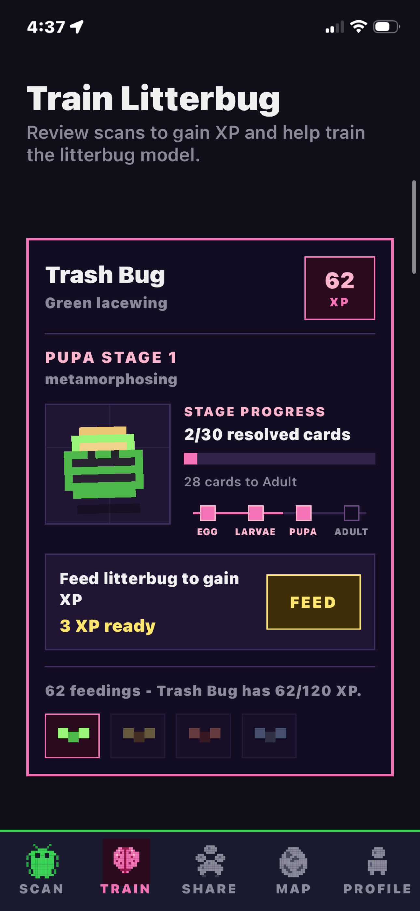
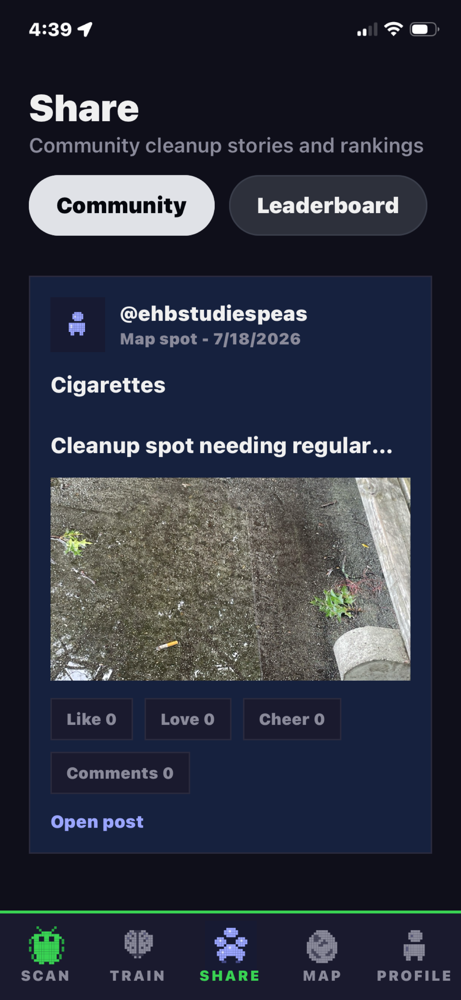
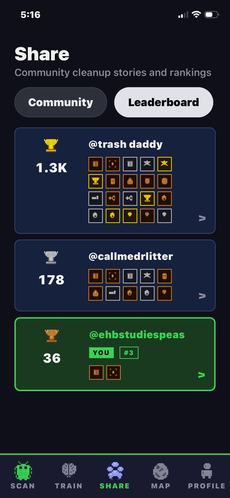
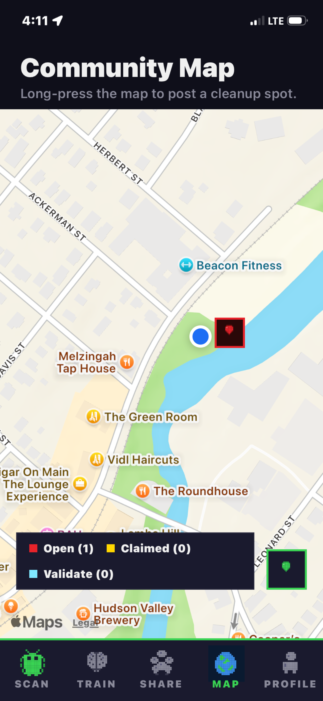
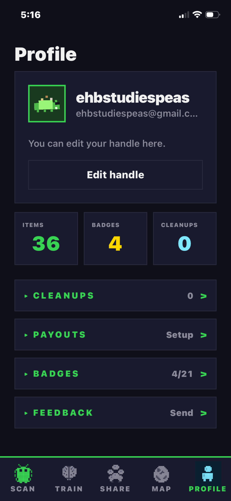

01 / Scan
Spot it. Log it.
Point the camera at litter to identify and count what you collect.
Litterbug is a gamified micro-gig and gig-ecology application. It uses machine vision, gamified model training, and social media to promote litter collection, document litter types, and increase societal litter prevention action. Litterbugs and Litterbug supporters can coordinate through micro financial incentives that support decentralized, local litter collection efforts and each other.
First install TestFlight. Then return here and open the Litterbug beta—no invitation code is needed.
Screenshots of Litterbug

Point the camera at litter to identify and count what you collect.

Review your litter to help improve the model, gain XP, and badges.

Use XP to train and collect new Litterbugs!

Post and share your Litterbug sessions on and off platform.

See how you stack up and send tips to Litterbugs.

Share litter locations and set bounties.

Curate your profile and set up financial incentives.
Similar litter grabbers to the one I use can be found cheaply on amazon. The bendable selfie stick I use can be found at this link. Reach out if you cannot afford a litter collection setup. I'm keen to support beta testers and can help with some purchasing! My email is in the support section below.